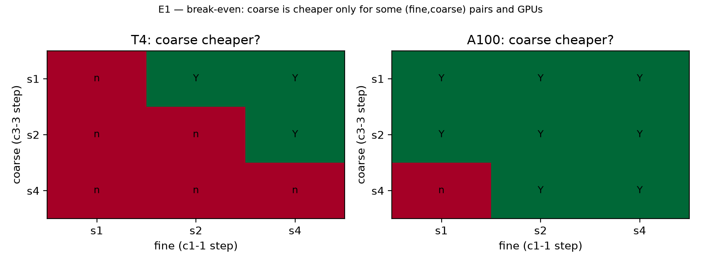
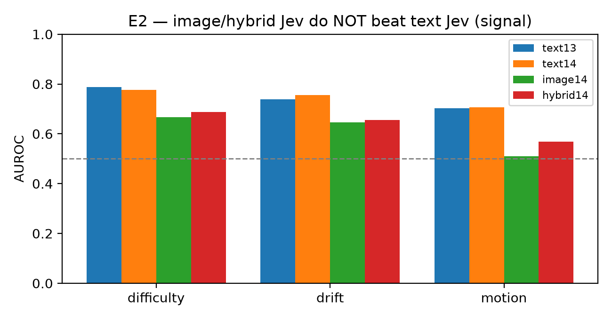
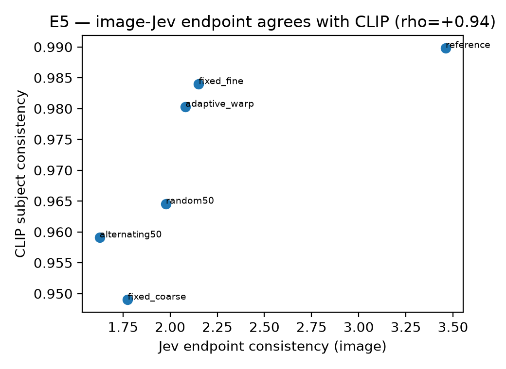
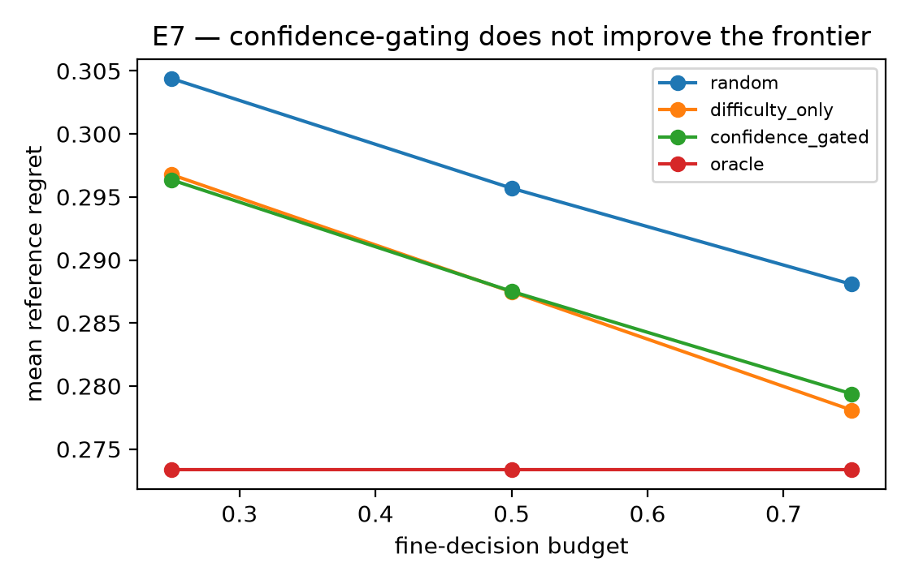
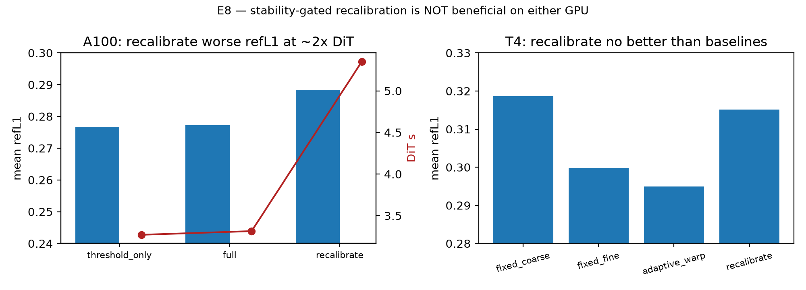

Research · Causal Video World Models
JevGAG: Jev-Grounded Adaptive Temporal Granularity for Causal Video Generation
When should a causal video generator spend fine per-frame compute, and when is a cheaper coarse chunk enough? JevGAG answers with an off-device System One oracle, a hardware-conditioned break-even law, and a validated independent endpoint.
Abstract
Causal video generators produce a rollout one temporal chunk at a time, which invites a simple efficiency idea: spend fine per-frame computation only where a segment is hard, and use cheaper coarse chunks, or even reuse, elsewhere. Realizing this idea requires three preconditions that are usually assumed rather than measured: a mode that is genuinely cheaper on the deployment hardware, a signal that predicts hard segments before generation, and an independent endpoint that certifies the trade. JevGAG audits all three on Causal-rCM, a Wan2.1-1.3B causal diffusion model, pairing a frame-wise mode with a chunk-3 mode and a near-zero-cost hold mode, routed by a two-threshold controller with hysteresis and forced recovery.
The result is a hardware-conditional trade-off, not universal dominance. The cost precondition holds only on some GPUs; the hand-crafted signal fails a preregistered held-out test (AUROC 0.491) while an off-device System One oracle succeeds (AUROC 0.788 in 0.67 s); the internal reference flips direction between GPUs, so independent endpoints are mandatory. Negative and failed experiments are preserved as evidence.
Headline results
Coarse is cheaper only for some
(fine,coarse) pairs and GPUs; on T4 c3-3 s4 is never cheaper.
Image-Jev does not beat text-Jev as a routing signal (honest negative).
The adaptive result flips with the coarse operating point alone (21% vs 92% fine).
Recovery+hysteresis cuts switches without worse regret; a switch seam exists.
Image-Jev endpoint agrees with CLIP subject consistency at ρ = +1.000.
Claim-to-artifact audit 18/18 PASS.
Figures





Method
A pre-generation decision routes each segment to fine (c1-1, S steps),
cheap coarse (c3-3 s1), expensive coarse
(c3-3 s4), or hold, driven by an off-device Jev oracle reading the
actual context, stabilized by recovery + hysteresis, and certified by an independent image-grounded
endpoint.
context ──► Jev oracle (text, off-GPU, 0.672 s) ──► typed difficulty / drift / motion
└──► controller: threshold τ + hysteresis Λ + recovery R
└──► action ∈ { fine c1-1 | coarse c3-3 | hold } ──► causal rolloutReproduce (0 GPU)
python scripts/e1_breakeven.py
python scripts/e2_image_signal.py && python scripts/e2_text14.py && python scripts/e2_hybrid.py && python scripts/e2_audit.py
python scripts/e3_online_matched.py
python scripts/e4_rq3_seam.py
python scripts/e5_endpoint.py && python scripts/e5_audit.py
python scripts/e6_t4_boundary.py
python scripts/e7_confidence_gate.py
python scripts/e9_claim_audit.pyBackbone: Causal-rCM Wan2.1-T2V-1.3B (commit ed3cb14) · GPUs: Tesla T4 and A100-SXM4-80GB · Jev jev-1.14.0.
Cite
@software{hossen2026jevGAG,
title = {JevGAG: Jev-Grounded Adaptive Temporal Granularity for Causal Video Generation},
author = {Hossen, Md Jisan},
year = {2026},
url = {https://github.com/j1s4nn/JevGAG}
}